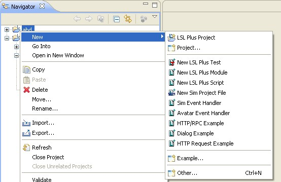

Examples are provided to illustrate some of the features of LSL Plus. Currently, three samples are provided, each of which illustrate a 'Sim Project' in conjunction with and event handler module:
The examples can be installed into an LSL Plus project by selecting (from the context menu within the Navigator view, from File -> New) the appropriate example creation wizard:
You select the location where you want it installed, and can then look at the source code and run the sample.
If you have previously installed a version of LSL Plus with fewer examples, the shortcuts to the examples may not show up in the top-level 'New' wizard menu. To make them appear, you can reset your perspective. You can also find them in the 'LSL Plus Examples' category: